CPython Survival Kit: basic C concepts to understand Python better
Dr. Cristián Maureira-Fredes
maureira.xyz
@cmaureir


Disclaimer
There might be code snippets that I don't recommend you to ever use in production.
I'm not responsible of your actions after this talk 👀.
I want you to
re-discover Python
Previously on Python
Recap of 3.11 and 3.12
Features on 3.11
- Faster Python
- Exception groups
- tomllib
- Fine-grained error locations in tracebacks
- more typing features!
Features on 3.12*
- Per-interpreter GIL
- Syntactic formalization of f-strings
- Improved error messages
- even more typing features!
Where are those
improvements and features? 🤔
but wait...
What is that Python?

How does Python works?
How does CPython works?

Have you ever looked inside 🫣?
Start with the code 📝
Repository overview
- Doc - official docs
- Include - interpreter header files
- Grammar - PEG (PEP 617)
- Lib - stdlib in pure Python
- Modules - stdlib in C
- Objects - Built-in types
- Python - CPython runtime
Let's talk a bit about
#include <stdio.h>
void bubbleSort(int arr[], int size);
void printarr(int arr[], int size);
int main() {
int data[] = {-2, 45, 0, 11, -9};
int size = sizeof(data) / sizeof(data[0]);
bubbleSort(data, size);
printarr(data, size);
}
void bubbleSort(int arr[], int size) {
for (int step = 0; step < size - 1; ++step)
for (int i = 0; i < size - step - 1; ++i)
if (arr[i] > arr[i + 1]) {
int temp = arr[i];
arr[i] = arr[i + 1];
arr[i + 1] = temp;
}
}
void printarr(int arr[], int size) {
for (int i = 0; i < size; ++i) {
printf("%d ", arr[i]);
}
printf("\n");
}
How does Python
abstraction works? 🧙
PyObject
// Include/pytypedefs.h
typedef struct _object PyObject;
struct _object {
#if (defined(__GNUC__) || defined(__clang__)) \
&& !(defined __STDC_VERSION__ && __STDC_VERSION__ >= 201112L)
// On C99 and older, anonymous union is a GCC and clang extension
__extension__
#endif
#ifdef _MSC_VER
// Ignore MSC warning C4201: "nonstandard extension used:
// nameless struct/union"
__pragma(warning(push))
__pragma(warning(disable: 4201))
#endif
union {
Py_ssize_t ob_refcnt;
#if SIZEOF_VOID_P > 4
PY_UINT32_T ob_refcnt_split[2];
#endif
};
#ifdef _MSC_VER
__pragma(warning(pop))
#endif
PyTypeObject *ob_type;
};
// Roughly, for Linux
struct _object {
Py_ssize_t ob_refcnt;
PyTypeObject *ob_type;
};
struct _typeobject {
PyObject_VAR_HEAD
const char *tp_name; /* For printing, in format "<module>.<name>" */
Py_ssize_t tp_basicsize, tp_itemsize; /* For allocation */
/* Methods to implement standard operations */
destructor tp_dealloc;
Py_ssize_t tp_vectorcall_offset;
getattrfunc tp_getattr;
setattrfunc tp_setattr;
PyAsyncMethods *tp_as_async; /* formerly known as tp_compare (Python 2)
or tp_reserved (Python 3) */
reprfunc tp_repr;
/* Method suites for standard classes */
PyNumberMethods *tp_as_number;
PySequenceMethods *tp_as_sequence;
PyMappingMethods *tp_as_mapping;
/* More standard operations (here for binary compatibility) */
hashfunc tp_hash;
ternaryfunc tp_call;
reprfunc tp_str;
getattrofunc tp_getattro;
setattrofunc tp_setattro;
/* Functions to access object as input/output buffer */
PyBufferProcs *tp_as_buffer;
/* Flags to define presence of optional/expanded features */
unsigned long tp_flags;
const char *tp_doc; /* Documentation string */
/* Assigned meaning in release 2.0 */
/* call function for all accessible objects */
traverseproc tp_traverse;
/* delete references to contained objects */
inquiry tp_clear;
/* Assigned meaning in release 2.1 */
/* rich comparisons */
richcmpfunc tp_richcompare;
/* weak reference enabler */
Py_ssize_t tp_weaklistoffset;
/* Iterators */
getiterfunc tp_iter;
iternextfunc tp_iternext;
/* Attribute descriptor and subclassing stuff */
PyMethodDef *tp_methods;
PyMemberDef *tp_members;
PyGetSetDef *tp_getset;
// Strong reference on a heap type, borrowed reference on a static type
PyTypeObject *tp_base;
PyObject *tp_dict;
descrgetfunc tp_descr_get;
descrsetfunc tp_descr_set;
Py_ssize_t tp_dictoffset;
initproc tp_init;
allocfunc tp_alloc;
newfunc tp_new;
freefunc tp_free; /* Low-level free-memory routine */
inquiry tp_is_gc; /* For PyObject_IS_GC */
PyObject *tp_bases;
PyObject *tp_mro; /* method resolution order */
PyObject *tp_cache; /* no longer used */
void *tp_subclasses; /* for static builtin types this is an index */
PyObject *tp_weaklist; /* not used for static builtin types */
destructor tp_del;
/* Type attribute cache version tag. Added in version 2.6 */
unsigned int tp_version_tag;
destructor tp_finalize;
vectorcallfunc tp_vectorcall;
/* bitset of which type-watchers care about this type */
unsigned char tp_watched;
};
That looks complicated
but it makes sense
It's time for us to
learn a bit of C
Python and C
# A comment
import my_module
def add(a, b):
return a + b
def main():
msg = "Hello World"
x = 3
y = 0.14
z = add(x, y)
print("%f" % z)
if __name__ == "__main__":
main()
// A comment
#include <my_module.h>
float add(int a, float b) {
return a + b;
}
int main(){
char msg[] = "Hello World";
int x = 3;
float y = 0.14;
float z = add(x, y);
printf("%f", z)
return 0;
}
Python and C (+type annotations)
# A comment
import my_module
def add(a: int, b: float) -> float:
return a + b
def main() -> None:
msg: str = "Hello World"
x: int = 3
y: float = 0.14
z: float = add(x, y)
print("%f" % z)
if __name__ == "__main__":
main()
// A comment
#include <my_module.h>
float add(int a, float b) {
return a + b;
}
int main(){
char msg[] = "Hello World";
int x = 3;
float y = 0.14;
float z = add(x, y);
printf("%f", z)
return 0;
}
Let's learn a few more details
Integers
- There is more than
int - More and less precision:
shortandlong - Negative integers?:
unsigned
Decimals
- Precision plays an important role
floatanddouble
Declaring and Initializing
- You are familiar with:
variable # nope variable = None - Here you can declare a variable without initialization:
int variable; // declared int another_variable = 3; // initialized
Memory management
l = [1, 2, 3, 4, 5]
l2 = []
l2.append(42)
l2.append(17)
l2.append("olá")
int a[] = {1, 2, 3, 4, 5};
int *a2 = malloc(3 * sizeof(int));
a2[0] = 42;
a2[1] = 17
a2[2] = "olá" // BOOM!
// Not forget to free!
free(a2);
C pointers (1/2)

C pointers (1/2)
C pointers (2/2)
int a = 42;
int *b = &a;
int c = a;
int d = *b;
// Changes
*b = 10;
c = 22;
// Before
a = 42
*b = 42
c = 42
d = 42
// After
a = 10
*b = 10
c = 22
d = 42
And finally: Compiling
#include <stdio.h>
int main() {
printf("olá\n");
return 0;
}
$ gcc main.c # this generates 'a.out'
$ gcc main.c -o main # and this 'main'
$ ./main
olá
Maybe you are thinking...
Python is easier
f = lambda x, m: x + m(x)
*s,='abcde'
SuperList = type(
"SuperList",
(list, ),
dict(
y=42,
hidden=lambda x: x.upper() if x*0=="" else x
)
)
l = SuperList()
l.append(100)
print(l.hidden("Hello"))
_="_=%r;print(_%%_)";print(_%_)
22>>i&1
n&~-n<1
K1FNr1hQ=K*KN;K
but that's Pyth not Python
pyth.readthedocs.ioall languages can be
Hard and Easy
But don't worry
The CPython API
helps you a lot
Strings
docs.python.org/3/c-api/unicode.html
char msg[] = "Hello World!";
PyObject *s = PyUnicode_FromString(msg);
...
Py_ssize_t = PyUnicode_GetLength(s);
Lists
docs.python.org/3/c-api/unicode.html
char msg[] = "Hello World!";
PyObject *s = PyUnicode_FromString(msg);
PyObject *l = PyList_New(0);
PyList_Append(l, s);
...
Check what's the PyObject storing
int PyUnicode_Check(PyObject *o);
int PyList_Check(PyObject *o);
int PyDict_Check(PyObject *o);
int PyFloat_Check(PyObject *o);
int PyTuple_Check(PyObject *o);
Parse arguments
static PyObject* glob(PyObject* self, PyObject* args,
PyObject* kwds){
const char *kwlist[] = {"directory", "recursive", 0};
const char *directory = nullptr;
const int *recursive = nullptr;
if (!PyArg_ParseTupleAndKeywords(args, kwds,
"z|p",
const_cast<char **>(kwlist),
&directory,
&recursive)) {
return nullptr;
}
...
Does it sounds more reasonable?
Real snippets freshly served
from the CPython repo
list.append (1/2)
static PyObject *
list_append(PyListObject *self, PyObject *object)
{
if (_PyList_AppendTakeRef(self, Py_NewRef(object)) < 0) {
return NULL;
}
Py_RETURN_NONE;
}
list.append (2/2)
int
_PyList_AppendTakeRefListResize(PyListObject *self, PyObject *newitem)
{
Py_ssize_t len = PyList_GET_SIZE(self);
assert(self->allocated == -1 || self->allocated == len);
if (list_resize(self, len + 1) < 0) {
Py_DECREF(newitem);
return -1;
}
PyList_SET_ITEM(self, len, newitem);
return 0;
}
CPython objects lifecycle (1/219)
Objects lives are controlled by a reference counter.
- If an object has no references, it's garbaged collected.
- If you are using* the object, you increase one reference count.
CPython objects lifecycle (2/219)
>>> import sys
>>> import sys
>>> a = [1,2,3]
>>> import sys
>>> a = [1,2,3]
>>> b = a
>>> import sys
>>> a = [1,2,3]
>>> b = a
>>> sys.getrefcount(a)
>>> import sys
>>> a = [1,2,3]
>>> b = a
>>> sys.getrefcount(a)
3
we will keep the other 217 slides for another time.
Is this useful IRL?
yes.
Python extension with C (1/4)
static PyObject* hello(PyObject* self, PyObject* args) {
char *msg = "Hey there PyConPT 2023!";
return Py_BuildValue("s", msg);
}
static PyMethodDef functions[] = {
{"hello", (PyCFunction)hello, METH_NOARGS, NULL},
{NULL, NULL, 0, NULL}
};
Python extension with C (2/4)
static struct PyModuleDef module = {
PyModuleDef_HEAD_INIT,
"pycon_pt",
NULL,
-1,
functions
};
Python extension with C (3/4)
PyMODINIT_FUNC PyInit_pycon_colombia(void){
return PyModule_Create(&module);
}
Python extension with C (4/4)
>>> from pycon_pt import hello
>>> hello()
'Hey there PyConPT 2023!'
PSA: Also in 游 flavor
that's an example...
any real projects?
- Cross platform framework for UI interfaces, and applications.
- Started in 1991
- With many, many modules.
- More info at
qt.io
Exposing projects in other languages
is not simple
But you are not alone
Binding generators
to the rescue
| Type | Lang | Python | License | Generates | |
|---|---|---|---|---|---|
| boost::python | Interface | C++11+ | 2.7, 3.0 | BSL-1 | - |
| SWIG | Code gen | C++11+ | 1.5+ | GPL3 | - |
| shiboken | Code gen | C++11 (*) | 2.7, 3.5+ | LGPLv3 | CPython, PyPy |
| sip | Code gen | C++11 (*) | 3.5+ | GPLv3 | CPython |
| pyBind11 | Interface | C++11 (*) | 2.7, 3.x | BSD-3 | - |
| cffi | Interface | C89, C99 (*) | 2.6+, 3.0+ | MIT | - |
| cppyy | Interface | C++11+ | 2 and 3 | UC | - |
| PyO3 | Code gen | Rust 1.48+ | 3.7+ | Apache/MIT | CPython, PyPy |
What can Python do
for the Portuguese community?
What can you
do for Python?
CPython Survival Kit: basic C concepts to understand Python better
Q&A
Let's be in touch!
Cristián
maureira.xyz@cmaureir